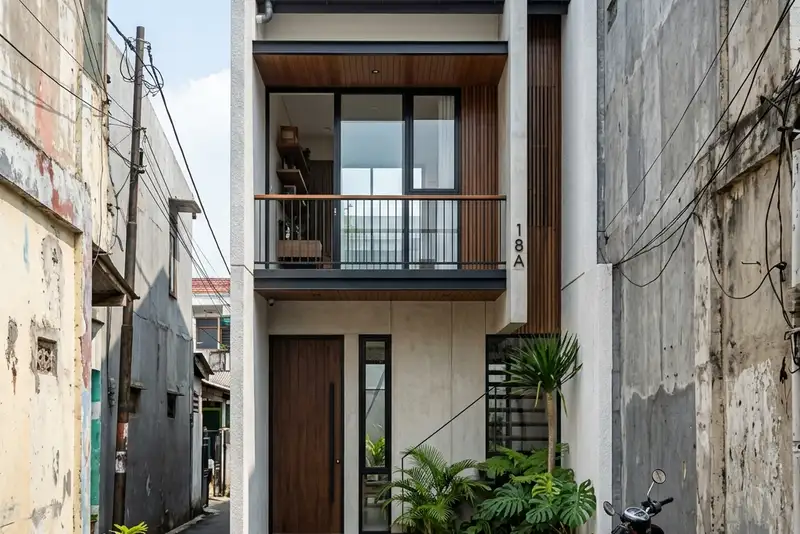

Daftar Isi
- Apa Itu Jasa Bangun Rumah di Lahan Sempit?
- Mengapa Banyak Orang Membutuhkan Jasa Bangun Rumah di Lahan Sempit?
- Bagaimana Cara Kerja Jasa Bangun Rumah di Lahan Sempit?
- Apa Saja Manfaat Menggunakan Jasa Bangun Rumah di Lahan Sempit?
- Apa Saja Faktor yang Memengaruhi Hasil Pembangunan di Lahan Sempit?
- Apa Saja Kesalahan Umum dalam Membangun Rumah di Lahan Sempit?
- Tips Memastikan Hasil Pembangunan Rumah di Lahan Sempit Maksimal
- Berapa Biaya Jasa Bangun Rumah di Lahan Sempit?
- Bagaimana Cara Memaksimalkan Desain Rumah di Lahan Sempit?
- FAQ
Jasa bangun rumah di lahan sempit adalah layanan konstruksi yang merancang dan membangun hunian pada lahan berukuran terbatas, biasanya di bawah 100 meter persegi, dengan pendekatan desain dan struktur yang efisien.
- Fokus pada optimalisasi ruang vertikal dan pencahayaan alami
- Melibatkan arsitek dan kontraktor berpengalaman menangani lahan terbatas
- Biaya dipengaruhi lokasi, jumlah lantai, dan spesifikasi material
- Kesalahan umum sering terjadi pada tahap perencanaan denah dan sirkulasi udara
- Hasil akhir bergantung pada kejelasan RAB dan pengawasan proyek
Apa Itu Jasa Bangun Rumah di Lahan Sempit?
Jasa bangun rumah di lahan sempit merupakan layanan konstruksi yang secara khusus menangani pembangunan hunian pada lahan berukuran kecil hingga sedang, umumnya dengan lebar kavling terbatas di kawasan padat kota.
Layanan ini berbeda dari jasa bangun rumah pada umumnya karena menuntut perhitungan tata ruang yang lebih cermat. Lahan sempit sering memiliki keterbatasan pada sisi lebar, sehingga desain harus memanfaatkan tinggi bangunan, bukaan cahaya, dan sirkulasi udara secara maksimal agar rumah tetap nyaman dihuni.
Di kawasan perkotaan seperti Malang, Batu, dan sebagian wilayah Jawa Timur lainnya, kebutuhan akan hunian di lahan terbatas terus tumbuh seiring meningkatnya harga tanah dan padatnya area permukiman. Kondisi ini mendorong lebih banyak keluarga muda mencari solusi rumah yang tetap fungsional meski berdiri di lahan kecil.
Jasa ini umumnya mencakup tiga komponen utama: perencanaan desain arsitektur, perhitungan struktur bangunan, dan pelaksanaan konstruksi hingga serah terima. Sebagian penyedia jasa juga menawarkan layanan tambahan seperti pengurusan izin mendirikan bangunan dan konsultasi interior.
Mengapa Banyak Orang Membutuhkan Jasa Bangun Rumah di Lahan Sempit?
Kebutuhan jasa bangun rumah di lahan sempit meningkat karena keterbatasan lahan di kota besar mendorong masyarakat mencari solusi hunian yang efisien secara ruang dan biaya.
Beberapa alasan utama meliputi:
Pertama, harga tanah di kawasan strategis terus naik sehingga masyarakat lebih memilih membeli kavling kecil dibanding pindah ke pinggiran kota yang jauh dari fasilitas umum. Kedua, keluarga muda cenderung memprioritaskan lokasi dekat tempat kerja atau sekolah anak dibanding luas lahan. Ketiga, tren rumah compact dan minimalis semakin diminati karena dianggap lebih mudah dirawat dan hemat energi.
Berdasarkan tren pembangunan hunian di berbagai kota besar Indonesia dalam beberapa tahun terakhir, proporsi rumah tapak baru yang dibangun pada lahan di bawah 100 meter persegi cenderung meningkat, seiring semakin terbatasnya ketersediaan lahan luas di area padat penduduk. Tren serupa juga teramati pada permintaan jasa desain rumah compact di berbagai platform konsultasi arsitektur selama periode 2023-2025.
Bagaimana Cara Kerja Jasa Bangun Rumah di Lahan Sempit?
Cara kerja jasa bangun rumah di lahan sempit dimulai dari survei lahan, dilanjutkan perancangan desain, perhitungan RAB, hingga pelaksanaan konstruksi dan serah terima.
Tahapan umum yang biasa dijalankan penyedia jasa meliputi:
- Survei dan pengukuran lahan untuk memastikan luas, bentuk, dan kondisi tanah.
- Konsultasi kebutuhan penghuni, termasuk jumlah kamar, gaya hidup, dan anggaran.
- Perancangan denah dan desain arsitektur yang menyesuaikan bentuk lahan.
- Penyusunan Rencana Anggaran Biaya (RAB) secara rinci.
- Pengurusan perizinan bangunan sesuai regulasi setempat.
- Pelaksanaan konstruksi mulai dari pondasi hingga finishing.
- Pengawasan berkala dan serah terima kunci setelah proyek selesai.
Setiap tahap idealnya didokumentasikan secara tertulis, terutama RAB dan jadwal kerja, agar tidak terjadi kesalahpahaman antara pemilik rumah dan kontraktor selama proses berlangsung.
Apa Saja Manfaat Menggunakan Jasa Bangun Rumah di Lahan Sempit?
Manfaat utama menggunakan jasa bangun rumah di lahan sempit adalah desain yang teroptimasi, efisiensi biaya, dan hasil bangunan yang lebih terjamin secara struktur.
Beberapa manfaat yang umum dirasakan pemilik rumah antara lain:
- Desain rumah lebih maksimal memanfaatkan setiap sudut lahan tanpa mengorbankan kenyamanan.
- Perhitungan struktur lebih aman karena ditangani tenaga berpengalaman menangani lahan terbatas.
- Estimasi biaya menjadi lebih terukur sejak awal proyek melalui RAB tertulis.
- Waktu pengerjaan cenderung lebih efisien karena alur kerja sudah terstandarisasi.
- Risiko kesalahan teknis seperti sirkulasi udara buruk atau pencahayaan minim dapat diminimalkan sejak tahap desain.
Apa Saja Faktor yang Memengaruhi Hasil Pembangunan di Lahan Sempit?
Faktor utama yang memengaruhi hasil pembangunan di lahan sempit meliputi bentuk lahan, orientasi matahari, regulasi setempat, dan kualitas perencanaan desain.
Bentuk dan kontur lahan menentukan pilihan desain, terutama pada lahan dengan sudut tidak simetris. Orientasi matahari memengaruhi penempatan jendela dan ventilasi agar sirkulasi udara tetap baik meski bangunan berdempetan dengan rumah tetangga. Regulasi setempat seperti garis sempadan bangunan dan koefisien dasar bangunan juga membatasi luas area yang boleh dibangun.
Selain itu, kualitas perencanaan desain di tahap awal sangat menentukan kenyamanan jangka panjang. Denah yang disusun tanpa mempertimbangkan alur sirkulasi penghuni cenderung menghasilkan ruang yang terasa sempit meski secara ukuran sebenarnya cukup.
Apa Saja Kesalahan Umum dalam Membangun Rumah di Lahan Sempit?
Kesalahan umum dalam membangun rumah di lahan sempit meliputi minimnya perencanaan pencahayaan, sirkulasi udara buruk, dan RAB yang tidak rinci sejak awal.
Beberapa kesalahan yang sering terjadi:
- Tidak memaksimalkan bukaan cahaya alami sehingga rumah terasa gelap dan lembap.
- Mengabaikan sirkulasi udara silang antar ruangan.
- Menentukan denah tanpa mempertimbangkan kebutuhan penyimpanan jangka panjang.
- Memilih kontraktor tanpa portofolio proyek lahan sempit sebelumnya.
- Tidak menyusun RAB secara rinci sehingga biaya membengkak di tengah proyek.
Tips Memastikan Hasil Pembangunan Rumah di Lahan Sempit Maksimal
Tips utama agar hasil pembangunan maksimal adalah memilih penyedia jasa berpengalaman, menyusun RAB rinci, dan melibatkan arsitek sejak tahap perencanaan awal.
Beberapa tips praktis:
- Diskusikan kebutuhan ruang secara detail sebelum desain dibuat.
- Minta contoh portofolio proyek serupa dari penyedia jasa.
- Pastikan RAB mencakup rincian material, upah, dan estimasi waktu pengerjaan.
- Perhatikan regulasi garis sempadan bangunan di wilayah setempat.
- Lakukan pengawasan berkala, minimal melalui laporan progres mingguan.
Untuk gambaran lebih lengkap mengenai cara memilih penyedia jasa yang tepat, silakan baca panduan memilih jasa bangun rumah lahan sempit yang terpercaya.
Berapa Biaya Jasa Bangun Rumah di Lahan Sempit?
Biaya jasa bangun rumah di lahan sempit bervariasi tergantung luas bangunan, jumlah lantai, spesifikasi material, dan lokasi proyek.
Secara umum, biaya dihitung berdasarkan luas bangunan per meter persegi dikalikan harga satuan pekerjaan yang berlaku di wilayah tersebut. Rumah dua lantai biasanya membutuhkan biaya per meter persegi yang sedikit lebih tinggi dibanding rumah satu lantai karena kebutuhan struktur tambahan. Pembahasan lebih rinci mengenai komponen biaya dapat dibaca pada artikel biaya bangun rumah di lahan sempit.
Bagaimana Cara Memaksimalkan Desain Rumah di Lahan Sempit?
Cara memaksimalkan desain rumah di lahan sempit adalah dengan memanfaatkan ruang vertikal, memilih tata letak terbuka, dan mengoptimalkan pencahayaan alami.
Pembahasan lengkap mengenai strategi desain dapat dilihat pada tips desain rumah lahan sempit, yang membahas berbagai pendekatan tata ruang untuk lahan terbatas.